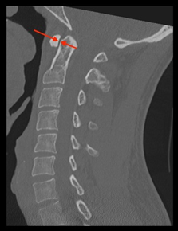

Adapted from: Knipe H, Atlantodental interval. Radiopaedia.org (Accessed on 17 Dec 2025). https://doi.org/10.53347/rID-38418
1) Description of Measurement
The distance between the anterior arch of C1 (atlas) and the odontoid process (dens) of C2. It reflects the integrity of the transverse atlantal ligament, which restrains anterior translation of C1 on C2.
2) Instructions to Measure
3) Normal vs. Pathologic Ranges
4) Important References
Bono CM, Vaccaro AR, Fehlings M, et al. Measurement techniques for upper cervical spine injuries: consensus statement of the spine trauma study group. Spine. 2007;32:593-600.
Bucholz RW, Burkhead WZ. The pathological anatomy of fatal atlanto-occipital dislocations. J Bone Joint Surg Am. 1979;61:248-250.
Rojas C, Bertozzi J, Martinez C, Whitlow J. Reassessment of the Craniocervical Junction: Normal Values on CT. AJNR Am J Neuroradiol. 2007;28(9):1819-23. doi:10.3174/ajnr.A0660 - Pubmed
Bertozzi J, Rojas C, Martinez C. Evaluation of the Pediatric Craniocervical Junction on MDCT. AJR Am J Roentgenol. 2009;192(1):26-31. doi:10.2214/ajr.08.1058 - Pubmed
5) Other info....
Although closely related, they serve distinct clinical purposes: the ADI is a diagnostic measure of ligamentous competence, whereas the PADI is a prognostic measure of neurological risk.